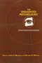
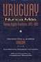

Browse
other Titles:
A B C
D E F
G H I
J K L
M N O
P Q R
S T U
V W X
Y Z |
 |
Unbought and Unbossed
Transgressive Black Women, Sexuality, and Representation
Melancon, Trimiko
256 pp • 5.5x8.5 • Fall 2014
paper 978-1-43991-146-4
cloth 978-1-43991-145-7 |
|
Unchopping a Tree
Verdeja, Ernesto
240 pp • 5.5x8.25 • Fall 2009
cloth 978-1-4399-0054-3
|
 |
Undocumented Fears
Immigration and the Politics of Divide and Conquer in Hazleton, Pennsylvania
Longazel, Jamie
226 pp • 6 x 9 • Spring 2016
paper 978-1-4399-1268-3
cloth 978-1-4399-1267-6
|
 |
The
U.S. Army War College
Military Education in a Democracy
Stiehm,
Judith Hicks
272 pp • 6x9 • Spring 2002
paper 978-1-56639-960-9
cloth 978-1-56639-959-3
|
 |
Un-American
W.E.B. Du Bois and the Century of World Revolution
Mullen, Bill V.
264 pp • 6x9 • Fall 2015
paper 978-1-4399-1110-5
cloth 978-1-4399-1109-9 |
 |
The
Uncertainties of Knowledge
Wallerstein,
Immanuel
224 pp • 5.5x8.25 • Spring 2004
paper 978-1-59213-243-0
cloth 978-1-59213-242-3
|
|  |
Undaunted
Psychologist
edited
by Brannigan, Gary G. and Matthew R. Merrens
320 pp • 6.5x9.25 • Fall 1992
cloth 978-1-56639-015-6 |
|
Under New Management
Universities, Administrative Labor, and the Professional Turn
Martin, Randy
272 pp • 6x9 • Spring 2011
paper 978-1-4399-0696-5
cloth 978-1-4399-0695-8
|
 |
The
Underclass Question
edited
by Lawson, Bill E., foreword by William Julius Wilson
232 pp • 6x9 • Spring 1992
paper 978-1-56639-062-0
cloth 978-0-87722-922-3 |
 |
Underground
Woman
My Four Years as a New York City Subway Conductor
Swerdlow,
Marian
272 pp • 6x9 • Spring 1998
paper 978-1-56639-610-3
cloth 978-1-56639-609-7
|
 |
Understanding Breast Cancer Risk
Kelly,
Patricia T.
195 pp • Spring 1991
paper 978-0-87722-813-4
cloth 978-0-87722-812-7 |
 |
Understanding
Dogs
Living and Working with Canine Companions
Sanders,
Clinton R.
224 pp • 6x9 • Spring 1999
paper 978-1-56639-690-5
cloth 978-1-56639-689-9
|
 |
Understanding
Enterprise Liability
Rethinking Tort Reform for the Twenty-First Century
Nolan,
Virginia and Edmund Ursin
272 pp • 5.5x8.25 • Fall 1994
cloth 978-1-56639-230-3 |
 |
Understanding
Mainland Puerto Rican Poverty
Baker,
Susan S.
256 pp • 6x9 • Fall 2002
paper 978-1-56639-970-8
cloth 978-1-56639-969-2
|
 |
The Undevelopment of Capitalism
Sectors and Markets in Fifteenth-Century Tuscany
Emigh, Rebecca Jean
288 pp • 6x9 • Spring 2008
paper 978-1-59213-619-3
cloth 978-1-59213-618-6
|
 |
The
Unfulfilled Promise
Public Subsidy of the Arts in America
Arian,
Edward
120 pp • Spring 1989
paper 978-1-56639-083-5
cloth 978-0-87722-612-3 |

|
The Unheard Voices
Community Organizations and Service Learning
edited by Stoecker, Randy, Elizabeth A. Tryon
232 pp • 5.5x8.25 • Spring 2009
paper 978-1-59213-995-8
cloth 978-1-59213-994-1
|
 |
The
Union Inspiration in American Politics
The Autoworkers and the Making of a Liberal Industrial Order
Amberg,
Stephen
368 pp • 6x9 • Fall 1994
cloth 978-1-56639-189-4
|
 |
The
Unity of Mistakes
A Phenomenological Interpretation of Medical Work
Paget,
Marianne A., foreword by Joan Cassell
206 pp • 5.5x8.25 • Spring 2004
paper 978-1-59213-186-0
|

|
The University Against Itself
The NYU Strike and the Future of the Academic Workplace
edited by Krause, Monika, Mary Nolan, Michael Palm and Andrew Ross
280 pp • 6x9 • Fall 2007
paper 978-1-59213-741-1
cloth 978-1-59213-740-4
|

|
Universities
in the Age of Corporate Science
The UC Berkeley-Novartis Controversy
Rudy, Alan P., Dawn Coppin, Jason Konefal, Bradley T. Shaw,
Toby A. Ten Eyck, Craig Harris and Lawrence Busch
256 pp • 6x9 • Fall 2006
cloth 978-1-59213-533-2
|
|
The
Unnatural Lottery
Character and Moral Luck
Card,
Claudia
232 pp • 5.5x8.25 • Fall 1996
paper 978-1-56639-453-6
cloth 978-1-56639-452-9
|

|
Unquiet Tropes
Form, Race, and Asian American Literature
Tsou, Elda E.
224 pp • 5.5x8.5 • Spring 2015
paper 978-1-4399-1125-9
cloth 978-1-4399-1124-2 |

|
Unraveling the Real
The Fantastic in Spanish-American Ficciones
Duncan, Cynthia
280 pp • 6x9 • Fall 2010
paper 978-1-4399-0241-7
cloth 978-1-4399-0240-0
|
 |
Unsettled
Cambodian Refugees in the New York City Hyperghetto
Tang, Eric
234 pp • 5.5x8.25 • Fall 2015
paper 978-1-4399-1119-8
cloth 978-1-4399-1118-1 |
 |
Unthinking
Social Science
The Limits of Nineteenth-Century Paradigms
Wallerstein,
Immanuel
304 pp • 6x9 • Spring 2001
paper 978-1-56639-899-2
cloth 978-1-56639-898-5
|
 |
Untidy
Gender
Domestic Service in Turkey
Ozyegin,
Gul
272 pp • 6x9 • Fall 2000
paper 978-1-56639-808-4
cloth 978-1-56639-807-7
|
 |
The
Unwanted
European Refugees from the First World War Through the Cold War
Marrus,
Michael R., foreword by Aristide R. Zolberg
432 pp • 6x9 • Spring 2002
paper 978-1-56639-955-5
|
 |
Unzipped
Genes
Taking Charge of Baby-Making in the New Millennium
Rothblatt,
Martine
201 pp • 5.5x8.25 • Spring 1997
paper 978-1-56639-554-0
cloth 978-1-56639-522-9 |
 |
Unzipped
Souls
A Jazz Journey Through the Soviet Union
Minor,
William
256 pp • 6x9 • Fall 1995
cloth 978-1-56639-324-9 |
 |
Upon the Ruins of Liberty
Slavery, the President's House at Independence National Historical Park, and Public Memory
Aden, Roger C.
New in Paperback!
264 pp • 6x9 • Spring 2017
paper 978-1-4399-1200-3
cloth 978-1-43991-199-0 |
 |
Upstream/Downstream
Issues in Environmental Ethics
edited
by Scherer, Donald
288 pp • Fall 1990
paper 978-1-56639-079-8
cloth 978-0-87722-747-2 |
|
Urban
Dangers
Life in a Neighborhood of Strangers
Merry,
Sally Engle
278 pp • Spring 1981
paper 978-0-87722-425-9
cloth 978-0-87722-219-4 |
 |
Urban
Elders
Family, Work, and Welfare Among Boston's Aged, 1890-1950
Gratton,
Brian
256 pp • Fall 1985
cloth 978-0-87722-390-0 |
|
The
Urban Idea in Colonial America
Fries,
Sylvia Doughty
208 pp • Spring 1978
cloth 978-0-87722-103-6 |
 |
Urban
Leviathan
Mexico City in the Twentieth Century
Davis,
Diane E.
424 pp • 6x9.25 • Spring 1994
paper 978-1-56639-151-1
cloth 978-1-56639-150-4
|
 |
The
Urgings of Conscience
A Theory of Punishment
Adler,
Jacob
316 pp • 6x9 • Fall 1991
cloth 978-0-87722-826-4
|
|  |
Uruguay
Nunca M�s
Human Rights Violations, 1972-1985
Servicio
Paz y Justicia, , translated by Elizabeth Hampsten, introduction
by Lawrence Wechsler
360 pp • 6x9 • Fall 1992
paper 978-1-56639-146-7
cloth 978-0-87722-953-7
|